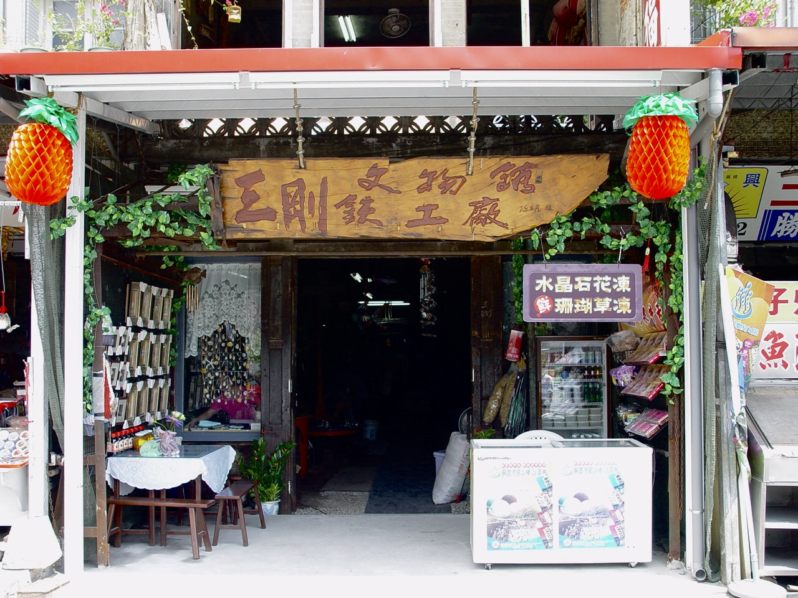
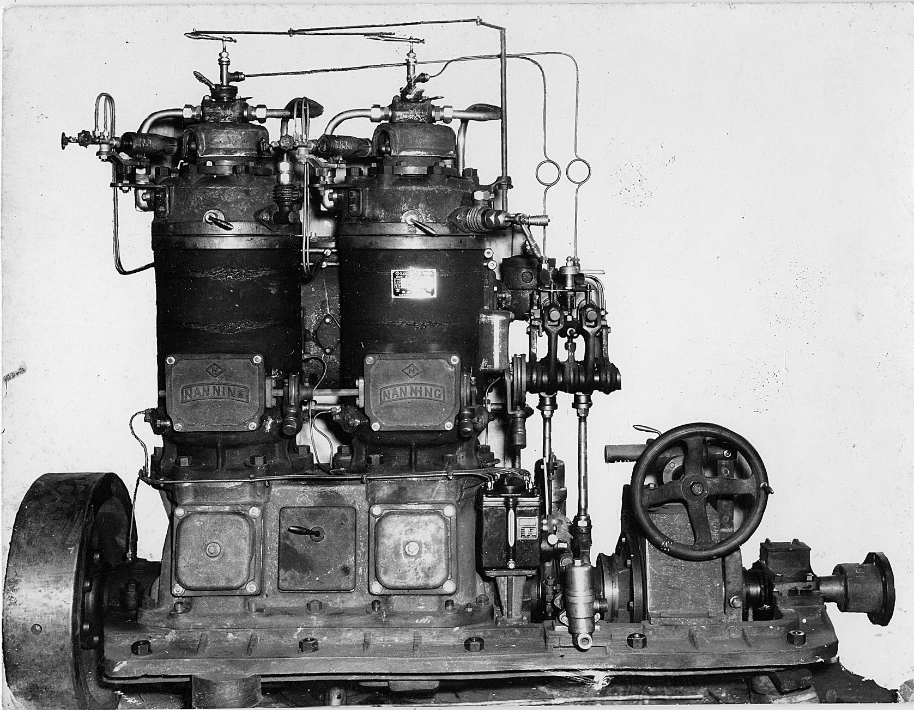
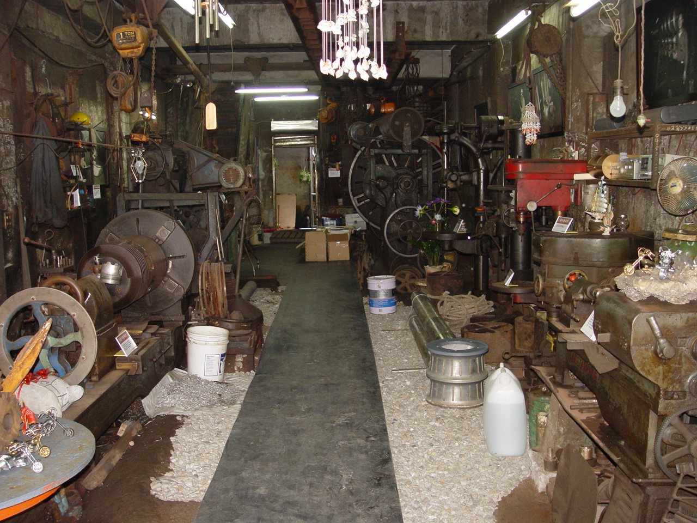
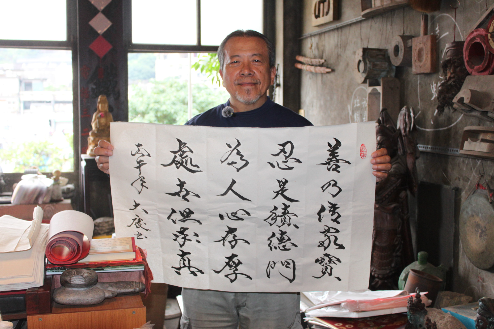

「我是廖大慶，在南方澳土生土長，已經在這邊住了七十多年了。」三鋼鐵工廠的經營者廖大慶笑著說，語氣裡散發著對這片土地的熟悉與自在。
對廖大慶而言，這間由父親與兩位好友於1962年創立的鐵工廠，不只是一間工廠，而是一段與家庭、地方、時代交織的生命經驗。在但2004年因產業沒落而結束營運後，三鋼鐵工廠並沒有消失，而是被他保留下來，轉化為一個文物館。對他而言，這裡不只是沒落的工作場所，更是一個承載記憶與情感的空間，是一段無法割捨的生命故事。
在鐵聲中長大：工廠裡的童年記憶
廖大慶並非在三鋼長大，但他的童年卻與這個環境緊密相連。由於工廠就在家裡附近，他從小便時常進出，對這裡感到既親切又有些疏離。對他而言，這裡不只是父親工作的場域，更像一個充滿未知的地方，各種機器、金屬聲響與工人忙碌的身影交織在一起，塑造了他對工廠最初的想像，他回憶道：「小時候覺得這裡很好玩，什麼都有。」
國中的時候，父親不想讓他在暑假浪費時間，便將他帶進工廠。一開始的工作內容與技術無關，多半是打掃環境、清理廁所與整理工具等雜事，但也正是在這樣的過程中，他開始學會觀察師傅如何操作機具、如何判斷問題、如何處理材料，這些並不是逐步教導的知識，而是日常生活中日積月累的理解與經驗。
但這樣的學習並沒有持續太久，父親在他高中時意外過世，家中經濟頓時失去依靠，當時還在讀高中的廖大慶不敢說要去讀大學，只想趕快畢業能幫家裡一點忙，心中也留下無法繼續升學的遺憾。從那時開始，工廠對他不只是生活的一部分，更是一種承擔與責任。
三個金剛的創業年代：工廠裡的人情與技藝

三鋼鐵工廠的誕生，是一整個時代背景的縮影。
戰後的台灣景氣低迷，南方澳也因漁業資源豐富吸引了大量人口湧入，更帶動了周邊產業發展。廖大慶的父親來自南投，年輕時曾在一家鐵工廠當過學徒，來到南方澳後，他先以師傅的身分工作。但隨著他在這裡落地生根、娶妻生子，他開始意識到單靠薪資難以支撐家庭，於是與兩位志同道合的朋友共同創業。
廖大慶回憶三鋼草創的情況：「三個人各有專長，我父親是車床，另外兩個師傅一個做手工技藝，一個做機械加工，他們覺得三個人像三個金剛。」這個稱號不僅僅是象徵，也代表一種技術的整合。在那個物資匱乏的年代，工廠需要具備高度的靈活性，才能滿足不同需求，而三鋼鐵工廠正是在這樣的環境中建立起來的。
他提到，當時的工廠是以學徒制度作為主要的技術傳承方式，年輕人進入工廠不需繳學費，而是透過長時間的勞動和觀察來習得技藝，一般來說三年四個月是一個被普遍認可的出師門檻，這樣的制度不僅源於產業的需求，也反映了當時的社會結構及價值觀。
港口邊的萬能工廠：撐起南方澳漁業的無名力量

在南方澳漁業最興盛的年代，三鋼鐵工廠與港口的運作息息相關。廖大慶說，民國五、六十年代的漁港路，是一整排與漁船相關的工廠，從板金、焊接到引擎維修各種技術，在這裡交織形成完整的產業鏈，那是一種現在難以重現的景象。
三鋼鐵工廠規模雖然不大，卻能充分滿足許多船隻的需求。廖大慶強調：「我們那種工廠，叫做萬能工廠。」在那個年代沒有現成零件可以購買，從小螺絲到引擎，所有需要的東西都必須自己製作，「一根鐵條拿回來，要自己車成螺絲，公的母的都要做。」他說，甚至還要處理不同規格的問題，美制與英制並不相通，一切都依賴專業的技術與經驗判斷。
漁民在海上作業時遇到的新需求也會被帶回岸邊，交給師傅來處理，「你只要講得出來，我們就做給你」廖大慶這麼說。從捕魚工具的改良，到機械結構的設計，工廠成為連結漁業與技術的重要樞紐。他強調，「以前的師傅，船還沒靠岸，遠遠聽聲音就知道哪裡壞掉。」這種能力來自於長時間與器械相處形成的直覺，在維修上展現出的不只是技術，更是一種身體記憶與經驗累積。
有一個傳說故事：一艘漁船多次維修無果，最後透過問神指引來到三鋼鐵工廠，最終被師傅修復，從此，三鋼鐵工廠更加聲名大噪。這個故事不僅反映了地方記憶，也是那個年代技術與文化的一部分。
被時代淘汰的技術：當工廠不再被需要
但再怎麼重要的技術也無法抵擋時代的變遷，1970年代起全球工業進入「輕薄短小」的轉型時期，機械設備逐漸標準化，柴油引擎取代傳統燒頭式引擎，這樣的變化使得傳統鐵工廠逐漸失去競爭力。
三鋼鐵工廠當時面臨是否轉型的重大抉擇，「如果要活下去，就要改做新的引擎。」廖大慶說。但工廠最終沒有選擇轉型，而是決定繼續為舊客戶提供服務，畢竟那些仍使用舊型引擎的漁船仍需要有人維修，而三鋼鐵工廠選擇撐到最後，正因為廖大慶認為「我們不能放棄那些客戶。」
這個決定使工廠在經歷產業全面轉型後，自然的走向結束。廖大慶感慨地說，「消失的，不只是工廠本身，還包括整個技術體系與生活方式。」手工製作、師徒制度和港邊的勞動，都在機械化與自動化的浪潮中逐漸消退，「現在一台機器可以做幾萬個，以前要手把手教的東西，現在都不需要了。」他感嘆道。
從工廠到文物館：留下的不只是機器，而是記憶

三鋼鐵工廠停止營運後，廖大慶面臨一個選擇：讓它消失，或讓它留下，他最終選擇了後者。因為「不捨得」，也因為這個地方對他而言，不只是父親的事業，更是一段承載著感情與恩情的空間。父親過世後，另外兩位股東照顧他們一家，讓母親進工廠工作，得以支撐家庭生活，這份情誼使他無法輕易放棄這裡。
於是他和妻子將工廠保留下來，整理設備，慢慢轉型為文物館。剛開始人們不太能理解這樣的選擇，但隨著時間過去，類似的工廠逐漸消失，三鋼鐵工廠成為少數仍保留完整樣貌的歷史場所。
走進工廠內部，牆面上仍掛著過去使用的齒輪、模具與鐵件，代表性的燒頭式內燃機、老舊的車床與船用零件被完整保留下來，小小的空間裡堆滿了木製工藝品及魚鉤、鋼索等漁船零件，昏暗的燈光與斑駁的牆面，依稀保留著過去工廠運作時的氣味與痕跡。牆上的黑白照片記錄著早期的工人師傅們及他們的故事，另一側則展示著南方澳漁港不同年代的老照片，從繁華的港口到工廠的變遷，這些歲月的痕跡都被留存在這個空間裡。
如今這裡不只是一個展示器械的工廠，更是一個記錄南方澳歷史的重要據點。除了保存老機具與工業技術，也留下了南方澳漁業興盛、港口發展與地方生活的軌跡，近年來許多學生、研究者和遊客透過參訪重新認識南方澳，也看見港口背後那些不為人知的勞動者與技術者，使三鋼鐵工廠不只是一個靜態的展示空間，更成為一個持續承載地方記憶與人情交流的場所。
他語重心長的說，他想留下的不只是機器，而是整個時代曾經存在過的生活樣貌——人、技術與港口共同交織而成的故事。
一個地方如何被記得

當廖大慶被問到三鋼鐵工廠對他的意義時，他並沒有給出宏大的答案，卻說了令人為之動容的回覆：「這是我父親一輩子的心血，也是對我有養育恩情的地方」。對他而言，三鋼鐵工廠從來不只是一間老工廠，而是一個承載著南方澳記憶的地方，那些老師傅工作的身影、工廠裡日夜運轉的機械聲、港口最繁華的景象，以及人與人之間的重情重義，都曾真實存在於這裡。
從萬能工廠到逐漸沒落，再到如今被保存為文物館，三鋼鐵工廠的轉變映照出南方澳的變化，曾經熱鬧的街道與繁榮的產業現在已不復見，但那些被留下來的空間與故事，讓人們得以回顧這座港口曾經的模樣。
廖大慶始終認為，如果這些場景與故事消失了，後來的人便很難真正理解，這座港口曾經被一群岸上的技術者與勞動者默默支撐著。
而三鋼鐵工廠的保留，也讓這些曾經存在過的生活，不會完全被遺忘。